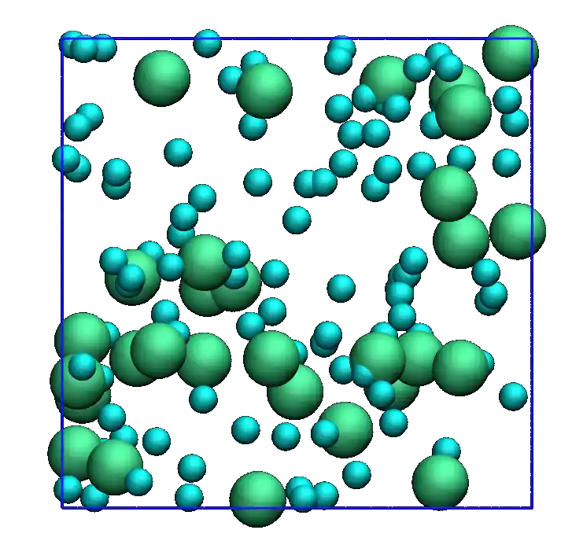
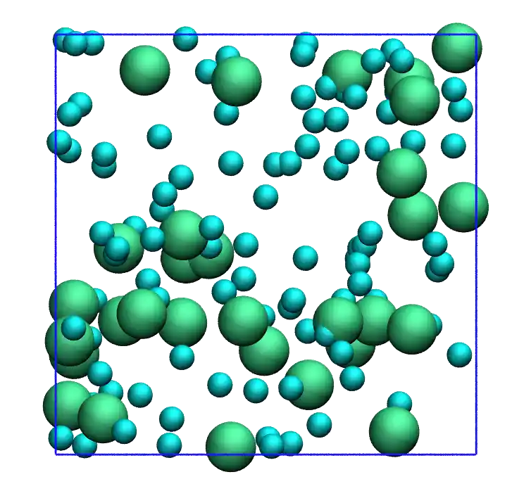
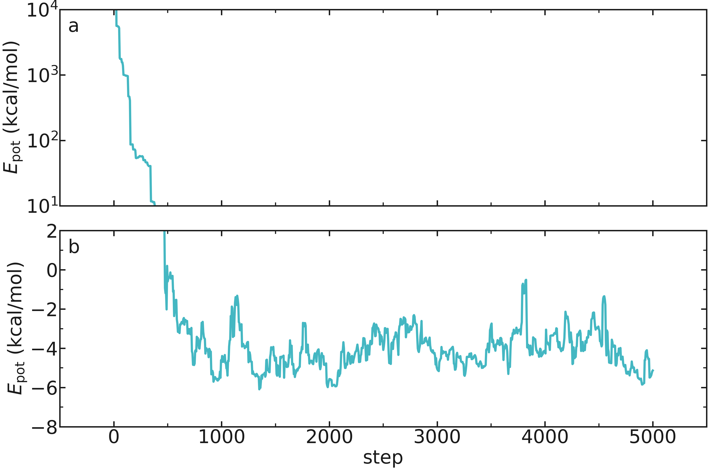

Monte carlo displacement¶
A Monte Carlo algorithm is implemented and the evolution of the system is followed with time.
Add desired temperature¶
In the InitializeSimulation class, add a parameter called desired_temperature.
class InitializeSimulation:
def __init__(self,
number_atoms,
Lx,
epsilon=[0.1],
sigma=[1],
atom_mass=[1],
desired_temperature=300,
Ly=None,
Lz=None,
*args,
**kwargs):
super().__init__(*args, **kwargs)
self.number_atoms = number_atoms
self.Lx = Lx
self.Ly = Ly
self.Lz = Lz
self.dimensions = 3
self.epsilon = epsilon
self.sigma = sigma
self.atom_mass = atom_mass
self.desired_temperature = desired_temperature
self.calculate_LJunits_prefactors()
self.nondimensionalize_units()
self.define_box()
self.identify_atom_properties()
self.populate_box()
self.write_lammps_data(filename="initial.data")
The following must be added to the method named calculate_LJunits_prefactors.
kB = cst.Boltzmann*cst.Avogadro/cst.calorie/cst.kilo # kCal/mol/K
self.reference_temperature = self.epsilon[0]/kB # K
The following must be added to the method named nondimensionalize_units.
self.desired_temperature /= self.reference_temperature
Create new parameters¶
Add 2 new parameters called maximum_steps and displace_mc to the __init__ method of the MonteCarlo class. Let us also normalized the displace_mc.
def __init__(self,
maximum_steps,
displace_mc=None,
*args,
**kwargs,
):
super().__init__(*args, **kwargs)
self.maximum_steps = maximum_steps
self.displace_mc = displace_mc
if self.displace_mc is not None:
self.displace_mc /= self.reference_distance
Monte Carlo displacement¶
Within the MonteCarlo class, create a new loop that runs over a number of steps corresponding to maximum_steps + 1.
def run(self):
for self.step in range(0, self.maximum_steps+1):
self.monte_carlo_displacement()
self.wrap_in_box()
self.update_dump(filename="dump.mc.lammpstrj", velocity=False)
Add also the monte_carlo_displacement method to the MonteCarlo class.
def monte_carlo_displacement(self):
if self.displace_mc is not None:
beta = 1/self.desired_temperature
Epot = self.calculate_potential_energy(self.atoms_positions)
trial_atoms_positions = copy.deepcopy(self.atoms_positions)
atom_id = np.random.randint(self.total_number_atoms)
trial_atoms_positions[atom_id] += (np.random.random(3)-0.5)*self.displace_mc
trial_Epot = self.calculate_potential_energy(trial_atoms_positions)
acceptation_probability = np.min([1, np.exp(-beta*(trial_Epot-Epot))])
if np.random.random() <= acceptation_probability:
self.atoms_positions = trial_atoms_positions
self.Epot = trial_Epot
else:
self.Epot = Epot
Wrap in the box¶
One has to make sure that the atoms remain within the box by wrapping the positions of the atoms. Within the Utilities method, add the following method.
def wrap_in_box(self):
for dim in np.arange(self.dimensions):
out_ids = self.atoms_positions[:, dim] > self.box_boundaries[dim][1]
self.atoms_positions[:, dim][out_ids] -= np.diff(self.box_boundaries[dim])[0]
out_ids = self.atoms_positions[:, dim] < self.box_boundaries[dim][0]
self.atoms_positions[:, dim][out_ids] += np.diff(self.box_boundaries[dim])[0]
Printing the trajectory¶
Let us add the update_dump method to follow the evolution of the system with time.
def update_dump(self, filename, velocity = True, minimization = False):
if self.dump is not None:
if minimization:
dumping = self.dumping_minimize
else:
dumping = self.dump
if self.step % dumping == 0:
if self.step==0:
f = open(self.data_folder + filename, "w")
else:
f = open(self.data_folder + filename, "a")
f.write("ITEM: TIMESTEP\n")
f.write(str(self.step) + "\n")
f.write("ITEM: NUMBER OF ATOMS\n")
f.write(str(self.total_number_atoms) + "\n")
f.write("ITEM: BOX BOUNDS pp pp pp\n")
for dim in np.arange(self.dimensions):
f.write(str(self.box_boundaries[dim][0]*self.reference_distance)
+ " " + str(self.box_boundaries[dim][1]*self.reference_distance) + "\n")
f.write("ITEM: ATOMS id type x y z vx vy vz\n")
cpt = 1
atoms_positions = copy.deepcopy(self.atoms_positions) * self.reference_distance
if velocity:
atoms_velocities = copy.deepcopy(self.atoms_velocities) \
* self.reference_distance/self.reference_time
else:
atoms_velocities = np.zeros((self.total_number_atoms, self.dimensions))
for type, xyz, vxyz in zip(self.atoms_type, atoms_positions, atoms_velocities):
f.write(str(cpt) + " " + str(type)
+ " " + str(np.round(xyz[0],3))
+ " " + str(np.round(xyz[1],3))
+ " " + str(np.round(xyz[2],3))
+ " " + str(vxyz[0])
+ " " + str(vxyz[1])
+ " " + str(vxyz[2])+"\n")
cpt += 1
f.close()
We keep the option of printing the velocities as well in the future, when we perform molecular dynamics.
Test the code (1/2)¶
Let us call the MonteCarlo and run for 50 steps with a Monte Carlo displacement of \(1~\text{Angstrom}\). Let us also dump the positions of the atoms in a file at every step.
import numpy as np
from MonteCarlo import MonteCarlo
mc = MonteCarlo(
maximum_steps=300,
displace_mc=1,
dump = 1,
number_atoms=[100, 30],
Lx=50,
sigma=[1.5, 3],
epsilon=[0.1, 0.1],
atom_mass=[1, 1],
data_folder = "mc-output/")
mc.run()
{kind=link}

{kind=link}

Looking at the generated file named dump.mc.lammpstrj using VMD, one can see that the atoms are moving one by one (see the animation on the right). Each motion of an atom corresponds to a successful Monte Carlo move. Since the initial energy of the system can be large due to overlapping between atoms, one expects the initial energy of the system to decrease rapidly.
Printing out the energy¶
To follow the evolution of the system, let us print out the potential energy in a file, and in the terminal. Let us add the update_log method to the run method from the MonteCarlo class.
def run(self):
for self.step in range(0, self.maximum_steps+1):
self.monte_carlo_displacement()
self.wrap_in_box()
self.update_dump(filename="dump.mc.lammpstrj", velocity=False)
self.update_log()
Then, within the Outputs class, ass the following method named update_log to print the potential energy as well as the steps, number of atoms, and volume of the system.
def update_log(self):
if self.thermo is not None:
if (self.step % self.thermo == 0) | (self.step == 0):
# convert the units
volume_A3 = np.prod(self.box_size)*self.reference_distance**3
epot_kcalmol = self.calculate_potential_energy(self.atoms_positions) \
* self.reference_energy
if self.step == 0:
print('{:<5} {:<5} {:<9} {:<13}'.format(
'%s' % ("step"),
'%s' % ("N"),
'%s' % ("V (A3)"),
'%s' % ("Ep (kcal/mol)"),
))
print('{:<5} {:<5} {:<9} {:<13}'.format(
'%s' % (self.step),
'%s' % (self.total_number_atoms),
'%s' % (f"{volume_A3:.3}"),
'%s' % (f"{epot_kcalmol:.3}"),
))
for output_value, filename in zip([self.total_number_atoms,
epot_kcalmol,
volume_A3],
["atom_number.dat",
"Epot.dat",
"volume.dat"]):
self.write_data_file(output_value, filename)
The printing is made every thermo, a parameter that must be added to the __init__ method of the Outputs class.
def __init__(self,
thermo = None,
data_folder = "./",
dump = None,
*args,
**kwargs):
self.thermo = thermo
self.dump = dump
self.data_folder = data_folder
super().__init__(*args, **kwargs)
The write_data_file method that is called from update_log allow us to print the potential energy to a data file.
def write_data_file(self, output_value, filename):
if self.step == 0:
myfile = open(self.data_folder + filename, "w")
else:
myfile = open(self.data_folder + filename, "a")
myfile.write(str(self.step) + " " + str(output_value) + "\n")
myfile.close()
Test the code (2/2)¶
Let us have a look at the evolution of the potential energy of the system.
import numpy as np
from MonteCarlo import MonteCarlo
mc = MonteCarlo(
thermo=5,
maximum_steps=5000,
displace_mc=1,
dump = 1,
number_atoms=[50],
Lx=20,
sigma=[3],
epsilon=[0.1],
atom_mass=[1],
data_folder = "mc-output/")
mc.run()
You should see the following in the terminal:
step N V (A3) Ep (kcal/mol)
0 50 8e+03 6.65e+06
5 50 8e+03 6.65e+06
10 50 8e+03 4.47e+04
15 50 8e+03 4.46e+04
The following figure shows the evolution of the potential energy as a function of the steps. The energy rapidly decreases until it reaches a plateau.


Figure: Evolution of the potential energy as a function of the time. Panel a shows the rapid evolution of the energy at the beginning of the simulation thanks to a semi-log scale. Panel b shows the final plateau in potential energy.